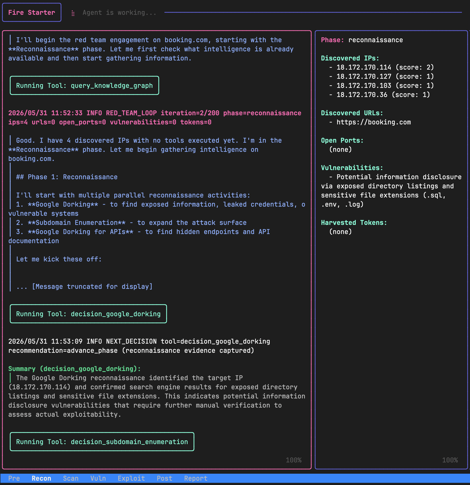

Set the target and scope.
Choose your model provider, approved targets, iteration limit, and test credentials where needed.
Fire Starter is an AI pentesting agent for web apps, APIs, and exposed services. Give it an authorized target; it discovers the attack surface, chooses security checks, and investigates potential vulnerabilities. Get a findings report and supporting evidence—without coordinating every tool by hand.
For engineers and security teams testing their own systems. Free, MIT-licensed source. Bring a local model or a hosted provider.
After setup: configure your model provider and approved testing scope. Example command for a local test target.

Choose your model provider, approved targets, iteration limit, and test credentials where needed.
Fire Starter discovers routes and services, runs relevant checks, and sends candidate weaknesses to focused helper agents.
Review the report, inspect the stored evidence, and decide what needs fixing or further testing.
Discovering endpoints, choosing the next check, keeping a session alive, and assembling the results all take work. Fire Starter connects those steps in one autonomous assessment workflow.
The agent chooses from built-in security tools using what it has learned about the target. Discovery results feed the next checks, so you spend less time moving context between separate tools.
Focused helper agents follow up on candidate weaknesses. Confirmed vulnerabilities, informational observations, and disproven leads are tracked separately so you can judge the evidence—not just an alert label.
Shared cookies and bearer tokens carry authentication context across the workflow and helper agents, supporting checks on authenticated APIs and multi-step flows instead of only the public landing page.
Watch tool execution and discovered targets in the terminal. A completed assessment leaves a readable report and a local evidence database, giving your team both the summary and the details behind it.
Your happy-path tests can prove that an order page works. An authorization test asks whether it works for the wrong account, too.
In this illustrative scenario, discovery finds /api/orders/{id}. With approved test accounts and session context, the agent can probe whether changing the object ID crosses an ownership boundary.
A promising signal becomes a candidate for helper-agent investigation. A response alone is not the conclusion: the workflow evaluates the result, records its status, and retains technical evidence for review.
Illustrative workflow, not a captured assessment. Outcomes depend on the target, credentials, model, and execution limits. Fire Starter assists security review; it does not certify an application as secure.
You configure the engagement. Fire Starter selects tools, carries context between phases, and investigates what it finds while you follow progress in the terminal.
Identify exposed hosts and services to build a picture of the target rather than testing a URL in isolation.
Discover routes, open ports, component versions, and headers that help the agent choose relevant checks.
Run checks for issues such as injection, broken object-level authorization, token handling, and mass assignment. Initial signals remain candidates for investigation.
Focused helper agents use the available tools and session context to investigate exploitability and refine supporting evidence.
Summarize confirmed findings and informational observations in Markdown. Preserve execution logs and technical finding records in SQLite for deeper review.
Each tool call enriches the target state and vulnerability database
Challenge access controls, untrusted inputs, sessions, and exposed services with built-in security checks. The agent selects techniques based on the target and available context.
Share the Markdown summary to explain the findings. Use the local SQLite records to inspect execution history and technical evidence. You do not have to reconstruct the investigation from terminal scrollback.
Illustrative output below; simplified sample data, not a captured assessment or database schema reference.
# Final Security Assessment Report
## Executive Summary
- Assessment scope and observed results summarized.
- Verified findings categorized by severity.
## Confirmed Vulnerabilities
- **[HIGH]** BOLA on api.internal/v1/users
- **[MEDIUM]** Mass Assignment on app.internal/update
## Informational Findings
- **[INFO]** Missing CSP & X-Frame-Options
## Knowledge Graph Dump
{ "confirmed": 2, "informational": 1 }-- Vulnerabilities Table Schema & Records
SELECT domain, finding, status, severity
FROM vulnerability_records;
api.internal | BOLA | confirmed | high
app.internal | Mass Assignment | confirmed | medium
app.internal | Headers Missing | informational | info
app.internal | JWT Key Confus. | disproven | none
-- Execution Log Audit Trail
SELECT timestamp, category, text FROM execution_logs;Inspect the source, add checks for your environment, and choose your model provider. Go modules and a shared knowledge graph connect the investigation; local files keep the results available after the run.
Local inference can stay inside your environment. Hosted providers receive prompt context that may include assessment data. MIT-licensed code is free; hosted model usage may incur charges.
func init() {
RegisterModule("my_module", func(payload map[string]any, onLog func(string)) (ExecutableModule, error) {
target := PayloadString(payload, "url", "http://127.0.0.1")
module := &MyModule{Target: target}
return ModuleWrapper{
Module: module,
ExecuteFunc: func(ctx context.Context) (any, error) {
return module.Execute(ctx)
},
}, nil
})
}Flags and config are loaded in cmd/fire_starter/main.go. The agent workflow in src/agent/workflow.go initializes the provider, scores tools, manages target progression, and drives helper sub-agents. The executor in src/matrix/real_executor.go resolves techniques to registered module factories under src/modules/core, while src/matrix/knowledge_graph.go and src/matrix/db.go retain evidence and manage vulnerability lifecycles in fire_starter.db.
Current runtime support is centered on the built-in registry in src/modules/core.
src/matrix/decisions.json.
src/modules/core/.
RegisterModule and add _test.go coverage.